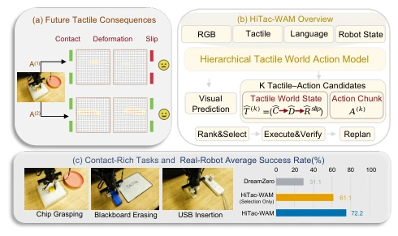
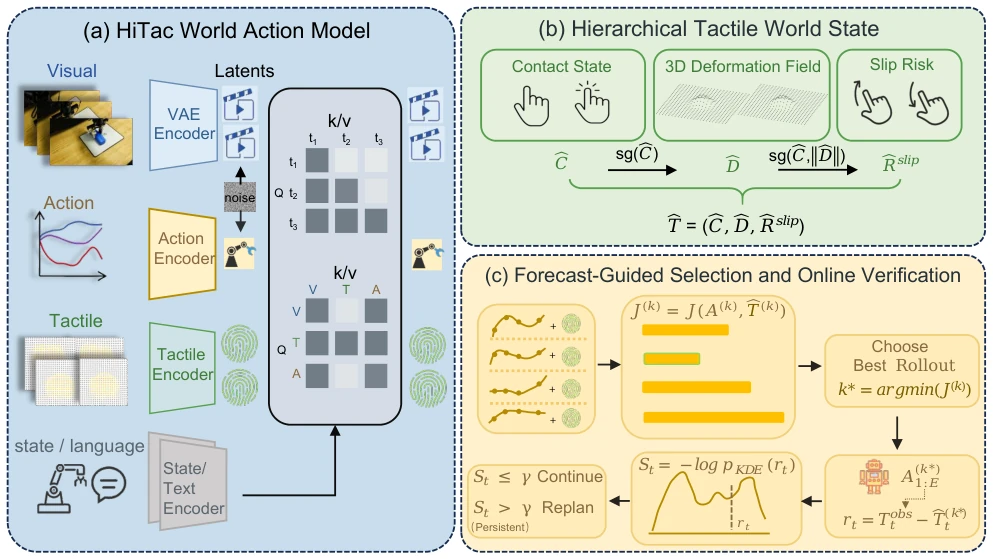
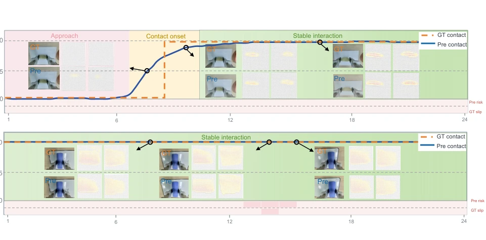
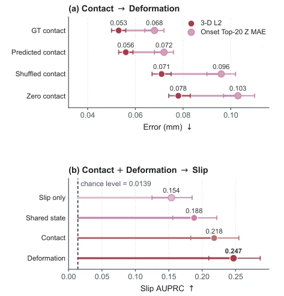
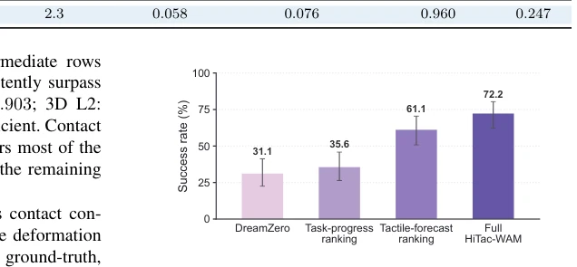
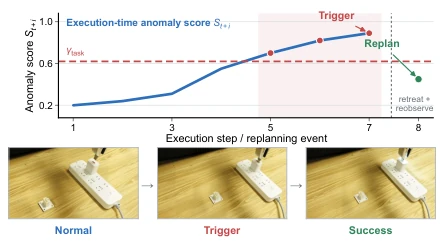

HiTac-WAM delivers a 'physics lesson' to tactile world models, enforcing a causal ordering of contact, deformation, and slip. This approach is significantly superior to models that treat tactile information as a single stream. It successfully demonstrates that merely watching video and feeling 'stable' is useless; one must first calculate whether slipping will occur under the hand. However, the model relies too heavily on tactile prediction; once sensor noise is large or calibration is misaligned, that 'stop-gradient' level may turn into 'stop thinking.' Additionally, although the AUPRC for slip prediction improved, the absolute value remains low, indicating it serves more as a 'ranking reference' rather than an 'absolute alarm,' which may be insufficient in extremely hazardous scenarios. Overall, this is a solid contribution that transforms tactile processing from 'hindsight wisdom' to 'foresight prediction,' though it still falls short of true general tactile intelligence.
Existing World Action Models primarily rely on visual prediction for the future, but in contact-rich manipulation tasks, vision often suffers from blind spots, unable to directly observe contact details between the end-effector and the environment [1]. When multiple candidate actions appear visually 'reasonable' (e.g., a robotic arm is aligned with the object), the actual physical consequences (such as unilateral contact, insufficient pressure, slip, or jamming) can be vastly different. Existing tactile perception methods mostly provide feedback after contact occurs [2][4], or mix contact state, deformation, and slip risk into a single stream for prediction, ignoring their strict physical dependencies (i.e., deformation depends on contact, slip depends on deformation) [7][8]. This prediction approach lacking a hierarchical structure makes it difficult for models to accurately distinguish the potential risks of different actions, failing to effectively screen out the optimal solution prior to action execution. Therefore, there is an urgent need for a model capable of explicitly modeling tactile state hierarchical dependencies and predicting tactile consequences before execution, to address the limitations of visual rollout.

Fig. 1. Overview of HiTac-WAM. (a) Visually plausible candidate actions can produce distinct contact, deformation, and slip outcomes. (b) For each candidate action chunk, HiTac-WAM forecasts a hierarchical tactile trajectory ordered from contact state through deformation to slip risk, reflecting the physical dependencies among these states. It then ranks the resulting action–forecast pairs and retains the selected forecast as an execution-time reference for verification and replanning. (c) The three contact-rich tasks and observed average success rates in the main real-robot comparison.
The core of HiTac-WAM is a hierarchical tactile world action model, with its Pipeline divided into four stages: candidate generation, hierarchical prediction, ranking selection, and online verification. First, multiple candidate action chunks (Action Chunks) are generated based on a pre-trained world action model. Next, the model performs hierarchical tactile prediction on each candidate chunk: the output is decoupled into contact state (Contact State), 3D deformation field (3D Deformation Field) under contact conditions, and slip risk (Slip Risk). These three outputs are not predicted independently but constitute a directed hierarchy: deformation prediction is conditioned on contact state, and slip prediction is conditioned on contact and deformation. To reinforce this physical dependency, the model employs a Stop-Gradient operation during training, blocking direct gradient updates from downstream loss to upstream heads, coupling only through shared tactile representations. Simultaneously, a directed attention mask (Directed Attention Mask) is introduced, allowing tactile queries to attend to video and action context, but prohibiting video and action queries from attending to tactile history, preventing information leakage. In the decision stage, the model scores and ranks candidate actions based on predicted tactile consequences (such as contact inconsistency, excessive deformation, slip risk) and task progress estimation. Finally, in the execution stage, the selected predicted trajectory is retained as a reference baseline; if persistent deviation occurs between real-time observations and the predicted tactile state, a replanning (Replanning) mechanism is triggered.

Fig. 2. Architecture of HiTac-WAM. (a) A directed attention mask allows tactile queries to access the video–action context while isolating video and action queries from tactile history. (b) The hierarchy predicts bilateral contact, contact-conditioned 3D deformation, and contact-gated slip risk. (c) Candidate action–forecast pairs are ranked by J(k); the selected tactile forecast is retained as the execution-time reference, and persistent forecast deviations trigger corrective replanning.
Experiments were conducted on the IMETA-Y1 robot platform, covering three contact-rich tasks: chip grasping, blackboard erasing, and USB insertion. The dataset comprises 200 complete clips, divided into training, validation, and test sets. Baselines include DreamZero (no tactile prediction), Reactive Tactile (reactive tactile only), and task progress ranking. Evaluation metrics encompass Contact F1, 3D displacement L2 error, Slip AUPRC, and real robot success rate. Results indicate that HiTac-WAM achieved an F1 score of 0.921 on contact prediction. Ablation studies demonstrate that introducing the directed hierarchical structure reduced the 3D displacement L2 error by 17.6% compared to models predicting deformation only, and increased Slip AUPRC by 60.4%. In real robot tasks, using tactile prediction ranking alone improved the success rate from 31.1% to 61.1%, while the full system incorporating the online verification mechanism achieved an average success rate of 72.2%, significantly outperforming other baselines.

Fig. 3. Hierarchical Tactile World-State Prediction. Representative 24-step forecasts for an approach-to-contact transition (top) and a stable-contact interval (bottom). Predicted contact-state estimates align with ground-truth transitions. Paired RGB and deformation snapshots show forecasts alongside the corresponding observations, while binary slip events are aligned with the predicted slip risk. Quantitative results for the three tasks are reported in Table II.

Fig. 5. Hierarchical Conditioning Diagnostics. (a) Contact-intervention 3D L2 and onset Top-20 Z MAE, with episode-paired bootstrap 95% CIs. (b) Slip AUPRC under cumulative conditioning; segments show lift above prevalence (0.0139), with stratified episode-bootstrap 95% CIs.

Fig. 6. From Sampling to Ranking to Verification. Observed success rates. At the fixed K=4 budget, tactile-forecast ranking reuses the Selection trials from Table I, whereas task-progress ranking uses an additional independent 90-trial set. DreamZero executes one candidate; error bars show two-sided 95% Wilson intervals.

Fig. 7. Online Forecast Verification during Execution. Anomaly-score trace recorded in a real execution trial (E=8 prefix); three consecutive scores above γtask trigger safe retreat and replanning.